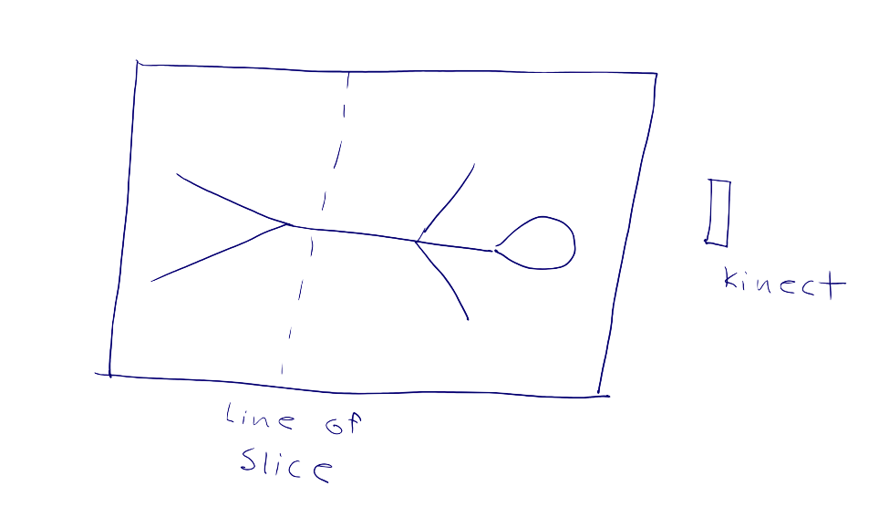

Idea
Hands free interfaces seem to be a solution in search of a problem. While novel and fun at first sight, there is no obvious need to interact which a computer without touching it when touch and a mouse interaction appear to work just fine. The technology is in search of a killer app. While in graduate school my colleagues and I tried to think of a situation where hands-free interaction was absolutely essential. Eventually it occured to us that the best example of this might be in a medical enviroment such as during surgery. Doctors and nurses working in surgery have to keep their hands sterile but often still want to be able to consult medical imagery. We tried to find ways they could use this imagery without touching an iPad or mouse. Later I integrated this work into the ResMD medical image viewer.

Initial Work
In our initial attempt we tried to solve two problems together; visualizing using an iPad moving through space and visualizing without hands. We also incorporated a digital tabletop which acted as a wayfinder, allowing users to oriented themselves with the data as it fit into the larger human body. As the user moved the iPad (or their hand) over the tabletop they were located and tracked using a Microsoft Kinect. Knowing the location relative the table we could then compute the appropriate slice and display it. Using the iPad for visualization create an interesting feeling, moving through the data above the tabletop while using a hand allowed for the desirable hands-free interaction.
Later Work
While our initial prototype allowed a user to work with the imaging data in a novel way, it could not deal with real medical imaging data. This tends to be larger and stored in a complex data format. Rather than creating a viewing from scratch, I chose to add a hands-free interface to an existing imager. For this system I chose to use a Leap Motion which can detect objects at a closer range to the sensor. In the example a user moves their hand forward and backward to move through a set of slices while moving up and down zooms in on one specific slice.
Continuing
This work is still in its early stages and could be assisted by more interaction with medical staff about their specific needs. Further advances in sensing technology can only improve the usability of these systems.